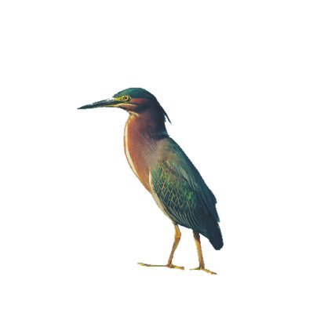

马库斯爱吃蛋糕💊
@seeyouinthe2999
@Ben77539996 @xiaojingcanxue 关键中国人玩得太花了，真就没有纯种汉人了现在

XO
@Ben77539996
@xiaojingcanxue 他們被蒙古人統治成了蒙古人的奴隸，但他們卻自豪的說成吉思汗是中國人，他們被女真族統治成了女真族的奴隸，然後他們又說女真族是中國人，歐洲很多民族被他族統治，一旦找到機會他們會復國尋求獨立，歐洲人都是以本民族為榮，猶太人，日耳曼民族，只有中共國賤種以被統治為榮成為他族的奴隸為榮。